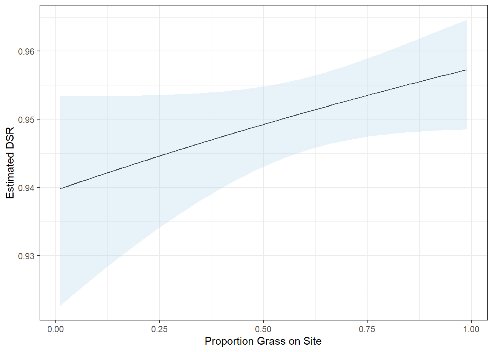
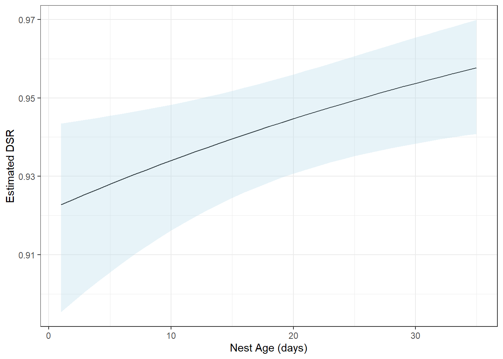

library(RMark)
library(tidyverse)Clase 9: Supervivencia de nido
La supervivencia de nidos es un área clave en la ecología de las aves. En términos generales, se mide la probabilidad de que un nido con huevos o crías llegue a producir individuos voladores. El enfoque de Manfield es un método simple que considera la proporción de nidos que tienen éxito.
Por otro lado, el enfoque RMark para la supervivencia de nidos implica modelos más sofisticados, utilizando técnicas estadísticas avanzadas para tener en cuenta variables específicas como el momento de la temporada, el efecto del depredador, la ubicación del nido, entre otros factores. Este método permite análisis detallados y precisos de la supervivencia de los nidos.
Para esta clase utilizaremos el paquete Rmark
Necesitamos también cargar una base de datos que esté correctamente formateada para su uso.
data(mallard)Esta base de datos presenta 565 observaciones con las siguientes 13 variables.
FirstFound el día en que se encontró el nido por primera vez
LastPresent el último día que los polluelos estuvieron presentes
LastChecked el último día en que se revisó el nido
Fate el destino del nido; 0=eclosionó y 1=depredado
Freq la frecuencia de nidos con estos datos; siempre es 1 en este ejemplo
Robel lectura de Robel del grosor de la vegetación
PpnGrass proporción de pasto en la cercanía del nido
Native variable 0/1; 1 si es vegetación nativa
Planted variable 0/1; 1 si es vegetación plantada
Wetland variable 0/1; 1 si es vegetación de humedal
Roadside variable 0/1; 1 si es vegetación de carretera
AgeFound edad del nido en días el día que se encontró el nido
AgeDay1 edad del nido al inicio del estudio
En ocasiones, será necesario realizar una preparación inicial de nuestros datos antes de proceder.
mallard1 <- mallard %>%
mutate(Habitat = case_when(
Native == 1 ~ "Native",
Planted == 1 ~ "Planted",
Roadside == 1 ~ "Roadside",
TRUE ~ "Wetland"
))ti = rep(1,565)
Model0 <- mark(data = mallard1, model = "Nest", time.intervals = ti , groups = "Habitat",
model.parameters = list(S= list(formula = Fate ~ 1)))
Model1 <- mark(data = mallard1, model = "Nest", time.intervals = ti , groups = "Habitat",
model.parameters = list(S= list(formula = Fate ~ NestAge + PpnGrass)))
Model2 <- mark(data = mallard1, model = "Nest", time.intervals = ti , groups = "Habitat",
model.parameters = list(S= list(formula = Fate ~ Robel)))
Model3 <- mark(data = mallard1, model = "Nest", time.intervals = ti , groups = "Habitat",
model.parameters = list(S= list(formula = Fate ~ AgeDay1)))class(Model0)[1] "mark" "Nest"MallardModels =collect.models(type="Nest")
MallardModels model npar AICc DeltaAICc weight Deviance
2 S(~FateNestAge + PpnGrass) 3 1563.010 0.000000 0.91784141 1557.006
1 S(~Fate1) 1 1569.117 6.107033 0.04331540 1567.116
4 S(~FateAgeDay1) 2 1570.668 7.658640 0.01993954 1566.666
3 S(~FateRobel) 2 1570.775 7.765340 0.01890365 1566.773#Model0[["results"]][["AICc"]]
#Model1[["results"]][["AICc"]]
#Model2[["results"]][["AICc"]]
#Model3[["results"]][["AICc"]]#Model1$design.matrix
#Model1$results$beta
#Model1$results$beta.vcv
#Model1$results$real
fc_grass <- find.covariates(Model1, mallard1)Warning in find.covariates(Model1, mallard1): No value given for data argument
so any covariate values are set to 0.# assign 17 to 1st 50 nest ages
fc_grass$value[1:100] <- 17
# assign range of values to PpnGrass
fc_grass$value[fc_grass$var == "PpnGrass"] <- seq(0.01, 0.99, length = 100)Warning in fc_grass$value[fc_grass$var == "PpnGrass"] <- seq(0.01, 0.99, :
number of items to replace is not a multiple of replacement length# fill design matrix with values
design_grass <- fill.covariates(Model1,fc_grass)
grass.survival <- compute.real(Model1, design = design_grass)
# insert covariate columns
grass.survival <- cbind(design_grass[1:100 , 3], grass.survival[1:100,])
colnames(grass.survival) <- c("PpnGrass", "DSR", "seDSR", "lclDSR", "uclDSR")
# view estimates of DSR for each age and PpnGrass combo
head(grass.survival) PpnGrass DSR seDSR lclDSR uclDSR NA
1 0.01000000 0.9398226 0.007793762 0.9226061 0.9534027
2 0.01989899 0.9400288 0.007662541 0.9231290 0.9534009
3 0.02979798 0.9402344 0.007532402 0.9236477 0.9533996
4 0.03969697 0.9404393 0.007403352 0.9241625 0.9533988
5 0.04959596 0.9406435 0.007275401 0.9246732 0.9533986
6 0.05949495 0.9408471 0.007148557 0.9251797 0.9533990 ggplot(grass.survival, aes(x = PpnGrass, y = DSR)) +
geom_line() +
geom_ribbon(aes(ymin = lclDSR, ymax = uclDSR), alpha = 0.3,
fill = "lightblue") +
xlab("Proportion Grass on Site") +
ylab("Estimated DSR") +
theme_bw()
fc_age <- find.covariates(Model1, mallard1)Warning in find.covariates(Model1, mallard1): No value given for data argument
so any covariate values are set to 0.fc_age$value[1:35] <- 1:35 # assign 1:35 to 1st 35 nest ages
fc_age$value[fc_age$var == "PpnGrass"] <- 0.1 # assign new value to PpnGrass
design_age <- fill.covariates(Model1, fc_age) # fill design matrix with values
# extract 1st 35 rows of output
age.survival <- compute.real(Model1, design = design_age)[1:35, ]
# insert covariate columns
age.survival <- cbind(design_age[1:35, c(2,3)], age.survival)
colnames(age.survival) <- c("Age", "PpnGrass","DSR", "seDSR", "lclDSR",
"uclDSR")
head(age.survival) Age PpnGrass DSR seDSR lclDSR uclDSR NA
1 1 0.1 0.9228137 0.01215584 0.8953612 0.9435182
2 2 0.1 0.9241404 0.01160073 0.8980411 0.9439757
3 3 0.1 0.9254462 0.01107197 0.9006284 0.9444481
4 4 0.1 0.9267312 0.01056992 0.9031233 0.9449369
5 5 0.1 0.9279959 0.01009497 0.9055260 0.9454435
6 6 0.1 0.9292403 0.00964755 0.9078363 0.9459694 ggplot(age.survival, aes(x = Age, y = DSR)) +
geom_line() +
geom_ribbon(aes(ymin = lclDSR, ymax = uclDSR), alpha = 0.3, fill = "lightblue") +
xlab("Nest Age (days)") +
ylab("Estimated DSR") +
theme_bw()
captura recaptura